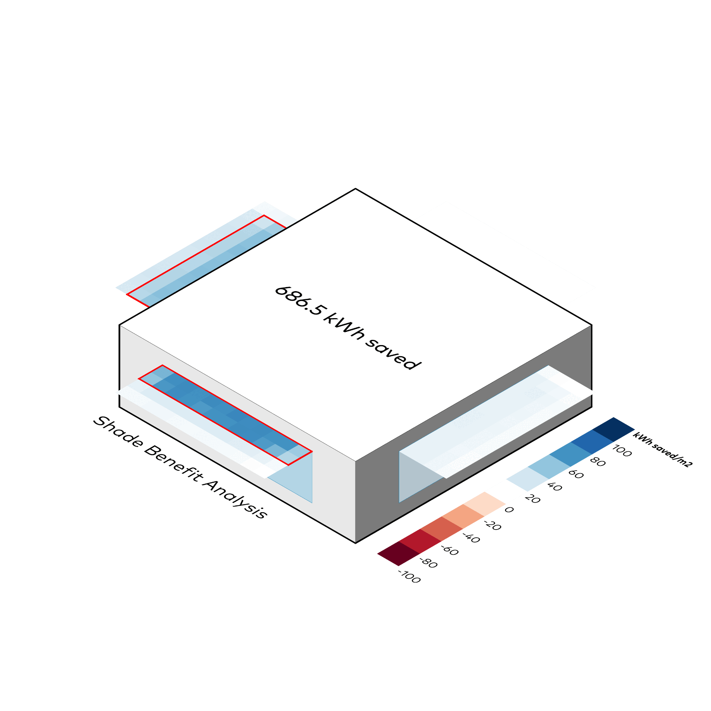
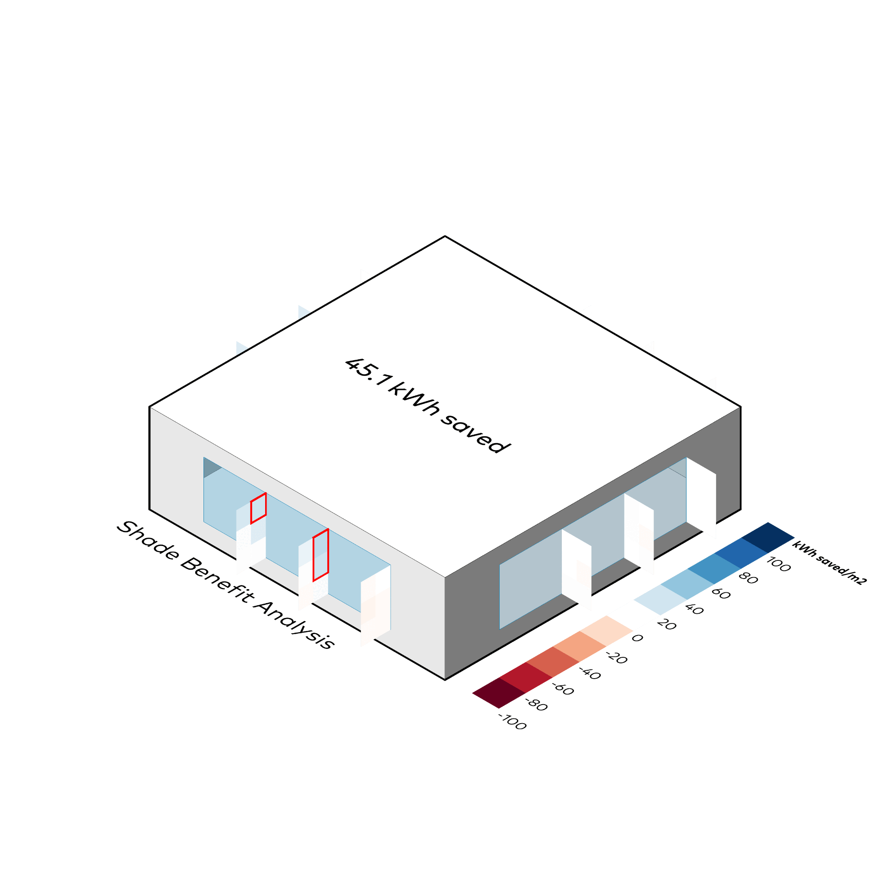
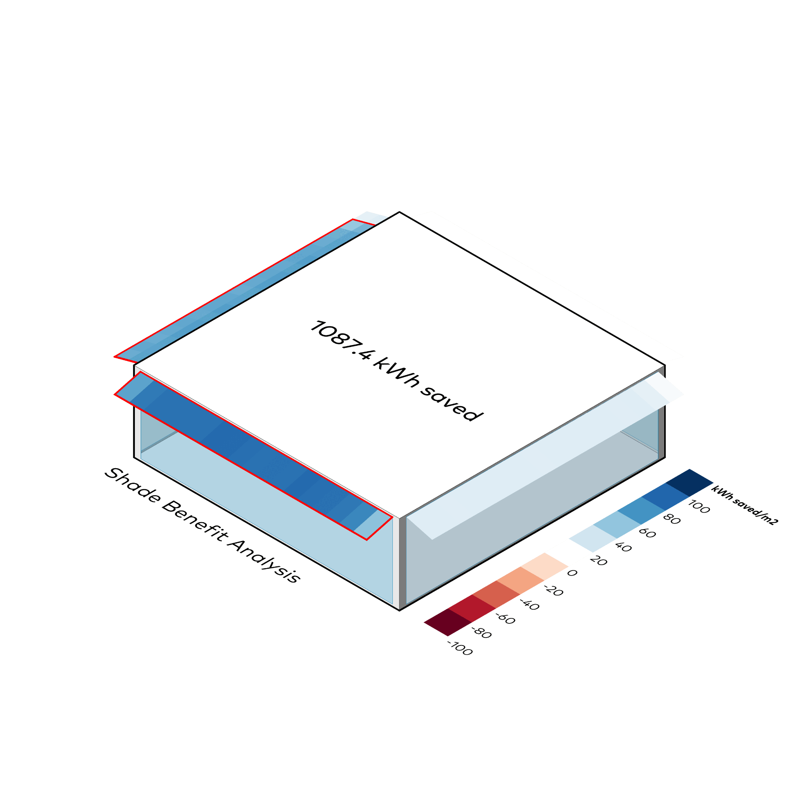

Verschattungsnutzen
Honeybee
⬤ Honeybee identifiziert optimale Verschattungszonen durch saisonale Energiefluss-Analyse (Solargewinne, Verluste). Reduziert sommerliche Kühllasten, erhält winterliche Heizgewinne. Differenziert Fenster/Fassaden nach Orientierung, Geometrie, Regelung. Optimiert Energiebilanz, Komfort, Blendung – ganzheitliche Fassadenplanung mit quantifizierbaren Effizienzgewinnen.
⬤ Honeybee identifies optimal shading zones through seasonal energy flow analysis (solar gains, losses). Reduces summer cooling loads, maintains winter heating gains. Differentiates windows/facades according to orientation, geometry, and control. Optimizes energy balance, comfort, glare – holistic facade planning with quantifiable efficiency gains.